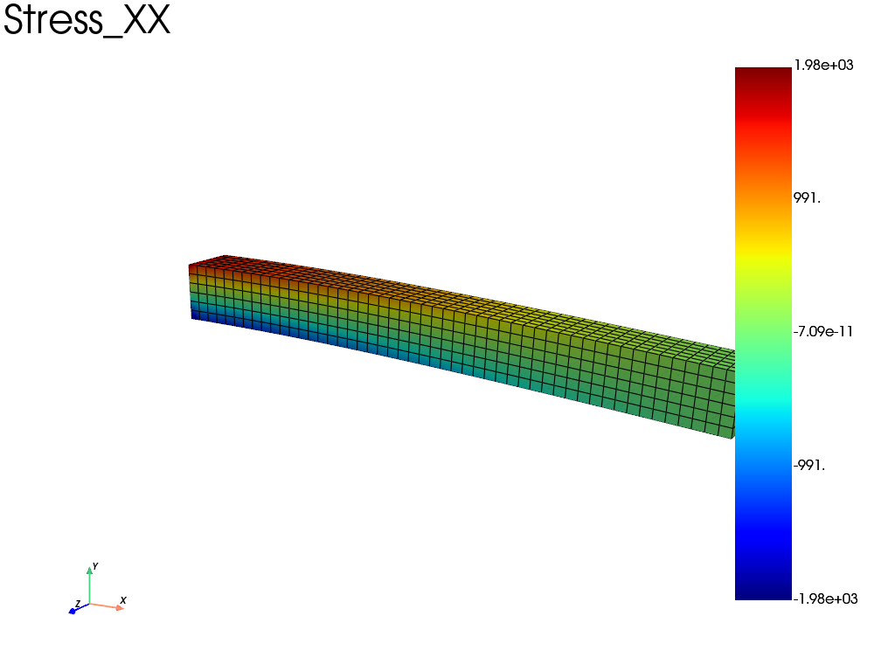

Note
Go to the end to download the full example code.
Canteleaver Beam using 3D hexahedral elements
import fedoo as fd
Pre-treatment: Mesh and problem definition
# Units: N, mm, MPa
mesh = fd.mesh.box_mesh(
nx=51,
ny=7,
nz=7,
x_min=0,
x_max=1000,
y_min=0,
y_max=100,
z_min=0,
z_max=100,
elm_type="hex8",
name="Domain",
)
fd.ModelingSpace("3D")
# Material definition
fd.constitutivelaw.ElasticIsotrop(200e3, 0.3, name="ElasticLaw")
wf = fd.weakform.StressEquilibrium("ElasticLaw")
# Assembly
assembly = fd.Assembly.create(wf, mesh, "hex8")
# Type of problem
pb = fd.problem.Linear(assembly)
# Boundary conditions
nodes_left = mesh.node_sets["left"]
nodes_right = mesh.node_sets["right"]
nodes_top = mesh.node_sets["top"]
nodes_bottom = mesh.node_sets["bottom"]
pb.bc.add("Dirichlet", nodes_left, "Disp", 0)
pb.bc.add("Dirichlet", nodes_right, "DispY", -50)
Dirichlet boundary condition:
var = 'DispY'
n_nodes = 49
value = -50
Solver: use conjugate gradient method
# pb.set_solver('cg') #uncomment for conjugate gradient solver
pb.solve()
Post-treatment: Get and plot results
# Get the displacement vector
U = pb.get_disp()
# Get the stress and strain tensor at nodes
res = pb.get_results(assembly, ["Stress", "Strain", "Disp"], "Node")
stress = res["Stress"]
strain = res["Strain"]
# plot the stress (xx component)
res.plot("Stress", "XX")

Total running time of the script: (0 minutes 0.285 seconds)